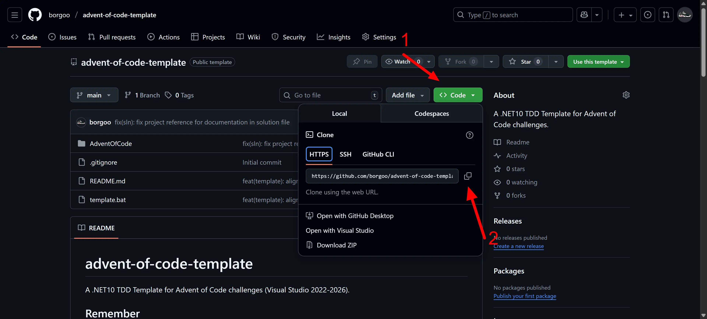
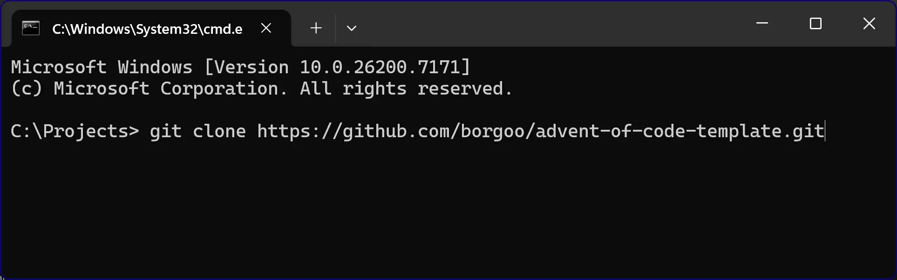
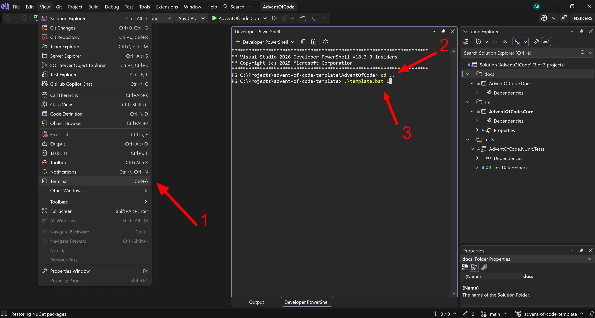
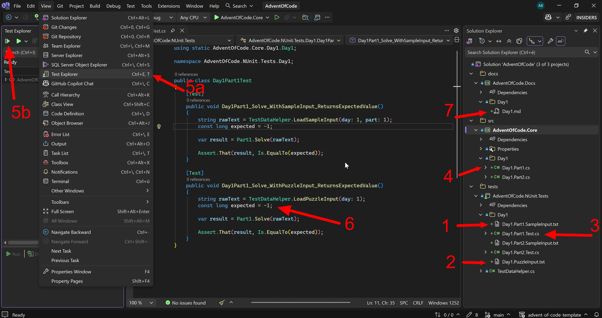

TDD template for Advent of Code 2025
A .NET Core TDD template to solve the Advent of Code 2025 challenges
Brace yourself, winter is coming! 🐺🗡️
Luckily with the winter season comes the Advent of Code: a yearly challenge to test your coding and problem-solving skills.
I learned about AoC last year (2024) from a friend of mine and since then I've fallen in love with it. I initially solved the 2024 AoC with a naive approach: as a rookie I chose to use .NET as the target language (since from that year on I've been trying to improve my .NET skills) and I solved the challenges with a CLI approach application. Fancy animations and fancy timers were a nice touch, but IMHO I was a bit out of focus on the challenge spirit: solving increasingly complex daily problems starting from simple inputs and testing them on the given examples.
I was proud of myself for being able to solve the challenges in the first place, but I felt like something better could be done.
Time passed after the last solution submission for the 2024 AoC... and eventually in the middle of the year I started looking for a new job as a .NET developer... it was at this time that, during an interview, I came into contact with the concept of TDD (Test Driven Development).
With TDD, it was love at first sight. It seemed to fit perfectly with the AoC challenges, so I started using it - and that's how my AoC 2023 was coded.
In the spirit of saving time, I also wrote a small batch script to speed up the creation of the skeleton for each new daily challenge.
Finally, I wrapped all these features into a template you can find here.
How to use the template
The template keeps everything scripted and test-driven inside Visual Studio. Here's the routine I follow each day:
- Initial setup (first time only).
Clone the repository.

- Open the solution in Visual Studio 2022 (or later) at
advent-of-code-template > AdventOfCode > AdventOfCode.slnx. - Scaffold Day 1.
Run the template script to create the Day 1 folders and starter files.
⚠️ You can use.\template.bat 1 -rfto remove the generated artifacts for Day 1 and start fresh if needed. - Work on the Day1.Part1 files.
- Paste the sample input (from the Advent of Code website) into
Day1.Part1.SampleInput.txt. - Paste the full puzzle input into
Day1.Part1.PuzzleInput.txt. - Adjust
Day1.Part1.Test.cs: rename methods, update expected results, and tailor the test flow. - Implement the solution in
Day1.Part1.cs. - Run the tests until they pass against the sample data.
- Replace the placeholder expected value in
Day1.Part1.Test.cswith the verified puzzle answer. - Capture notes in
Day1.mdwith the challenge description and any insights.

- Paste the sample input (from the Advent of Code website) into
- Repeat the same flow for the Day1.Part2 files.
Good luck!
That's pretty much how I tackle each Advent of Code day with this template. My English might not be perfect, but I hope these notes help you speed things up and keep the focus on solving the puzzles.
Good luck to everyone jumping into AoC 2025—see you on the leaderboards!